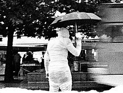

 image: Luben Karavelov“A biting, cold wind starts blowing and temperatures drops.”
An ordinary day, a Wednesday. It’s December. The sun has been shining for the last few days and it is incredibly warm for December at a city like Sofia. Finally I make up my mind to put on my skirt, the fashionable boots and sunglasses so that I feel cool throughout the day. I have to do thousands of chores throughout the city and I know I will have to walk and wait in long queues throughout the day, yet I know that this is going to be one wonderful day in Sofia. After work, my usual wide smile on my face, I get down to the chores. The moment I go out there goes the rain and it is raining cats and dogs. The sun is gone all of a sudden. A biting, cold wind starts blowing and temperatures drop. This is the day when all the deadlines for all my chores expire despite the bad joke that the weather is playing on me. I don’t have much of a choice, except to face it and keep my smile. The obstacles, however, have not started yet. A few jeeps and taxicabs speed by when the traffic light is red and I miraculously escape death, I am starting to get nervous. The traffic is hellish, maybe due to the rain. In the tram the people are bustling again, hitting me on the feet and sweeping me away as they fight to get to the three precious free seats. One of the windows of the dirty and cold tram is broken, letting in the rain. I, however, keep on smiling. I know that this is going to be a wonderful day. As I am getting off the tram one man bumps into me and I drop my bag in a huge puddle near the City Centre Sofia. Everyone is staring at me with a sneer and sympathy. All the things that were in the bag are scattered – I get them together and keep going, my bag dripping and dirty. In the meanwhile I drop my MP3-player and it gets wet too. Its battery is down and it stops playing, because maybe it is already damaged. Finally I get to the place where I should line up in a long queue to pay my bills. Finally one nice thing – there is no queue of people waiting. I keep on smiling. I make an attempt to enter the shop, but it is closed – it is audit time. I am turning to the other side – I am very angry now and at that moment a Mercedes speeds by and a shower of muddy water pours on me. Not an unusual thing in Sofia. The traffic jams are getting worse and worse. I abandon the hope that this will be one wonderful day. I am wet all over, my bag is crumpled like a banitsa. I regret my decision to put on my skirt, because it is freezing cold. I find out that my boots are letting the water through and my feet are wet as well. On my way home, riding on the tram, a lady standing next to me gets on my stocking and it runs a ladder. Today I hate everybody. I am disgusted that in my city live only idiots. The easiest thing to do is to start shouting at the woman and vent my frustration on her, but finally I decide that she is not the one to blame for spoiling my wonderful day. I get off the tram at the stop at the Central Hali. I have just a few miles to go to get to my home and get warm. My whole body starts shaking with fever, I must have caught a cold. The traffic light is red again and counts sixty seconds. Sixty seconds during which I have nowhere to hide from the rain… There is no point in it too for my whole body is soaked to the bone. I am desperate and even feel apathy towards what turns out to be my worst day. The flood is relentless and I look like shit, the wet is making my hair curlier, even though I have been flat ironing it for more than forty minutes in the morning. The countdown shows there are forty seconds to go before the traffic light turns green. At this disgusting moment the rain suddenly stops. I look right and I see a woman standing next to me, a woman whom I don’t know, aged about 25, pretty short and frail, holding her umbrella above my head. I look at her questioning and puzzled. She smiles back at me and says “I know you could not have been worse, but here is some shelter at least while you wait at the traffic lights.” I smile back, I am amazed and happy. There is no reason to say why. It was so kind and exhilarating to see at least one polite person. The woman I don’t know can’t help me physically, me being soaked to the bone, but somehow it … turns out to be one truly wonderful day in Sofia.
referenced works
- The story by Nadya Hamdan takes place downtown Sofia, but the main events happened in front of Sofia’s Central Market Hall or briefly “The Hall”. This is a shopping complex in Sofia, located at the intersection of the “Maria Louisa” boulevard and “The Eksarh Yosif” street. The construction of the building began in 1909 and the design belongs to architect Naum Torbov. “The Hall” opened doors in 1909 after a two-year construction and became an important commercial site in Sofia’s downtown. It was closed in 1988 for renovation and reopened around Easter time in 2000. The Israeli company “Ashtrom” owns 75% of “The Hall”. Around 1000 people work at “The Hall” while the commercial areas are located on three levels. ↩
location information
- Name: downtown Sofia
- Address: Sofia downtown
- Time of story: Afternoon
- Latitude: 42.704452
- Longitude: 23.323781
- Map: Google Maps

Write for Us!
We’re looking for short narratives describing pivotal moments of elation, confusion, absurdity, love or grief — or anything in between — inseparably tied to a specific place in Sofia.
Sofia:
Or receive updates by email
Addresses only used for the occational hitotoki mailing. Will not be sold to the crazy people on tram N22.
A list of all available RSS feeds is on the about page
commentary